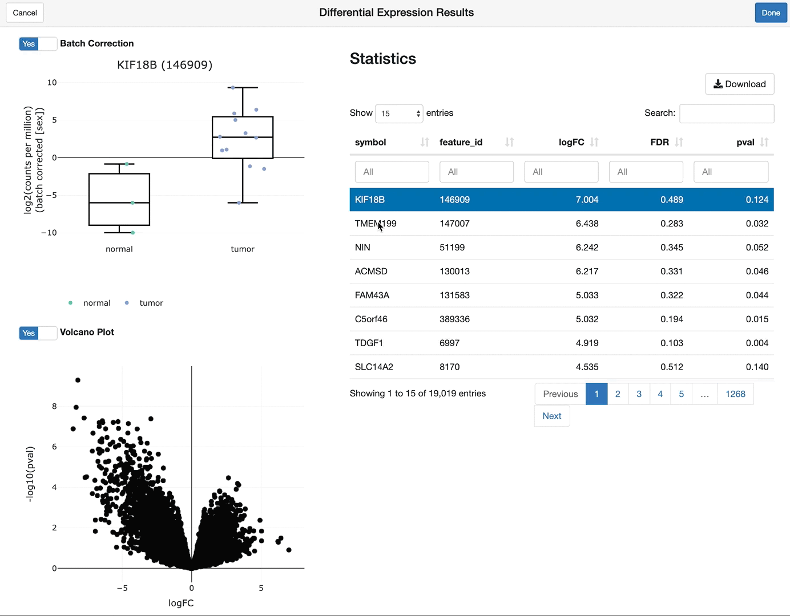
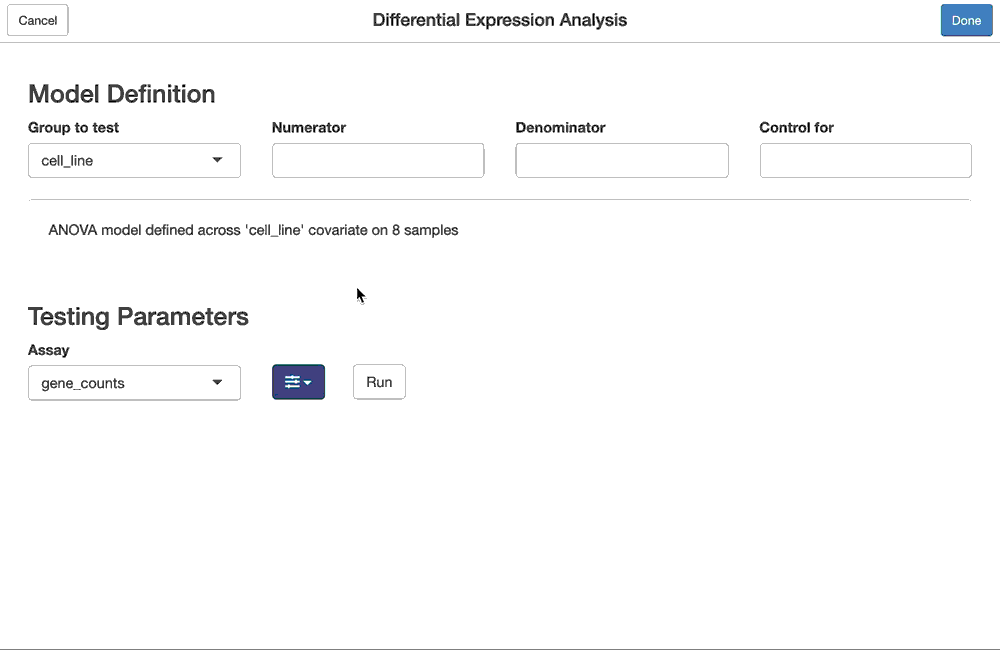

The FacileAnalysis package defines a set of analysis tasks over genomic data in a modular fashion, which requires these data to be stored in a container that implements the FacileData API (aka a FacileDataStore).
The over-arching goal of developing analyses within this framework is to enable quick and effortless interrogation of genomic data by enabling a hybrid interactive and code-driven approach to data analysis. Analyses can be either completely code-driven, GUI driven, or some mix of the two.
To achieve this goal, analysis modules break down a general analysis task into smaller constituent steps, the results of which can:
- be piped together (
%>%) to perform a complete analysis; - be explored at different levels of interactivity, via the
shine(),viz(), andreport()methods; and - act as starting (or reference) points for the next analysis task, either directly or by via the
ranks(),signature(), orcompare()methods.
Please refer to the RNA-seq Analysis: The Facile Way to get an idea of how to use these tools when analyzing RNA-seq data.
The analyses implemented within this package are listed below, with links to vignettes that describe their functionality in more detail:
-
fpca: Interactive Principal Components Analyses -
fdge: Interactive Differential Gene Expression Analysis -
fsea: Interactive (Gene) Set Enrichment Analysis
A note on the experimental lifecycle: This package is tagged as “experimental” due to its limited use by a broader audience, and not as a sign of the commitment to its development or how long it has been in (internal) use. As we find the edge cases and pain points in the APIs through broader adoption, we expect to soon move to “maturing” (and eventually “stable”) lifecycle.
Example Analysis: Differential Expression
We’ll include an exemplar differential expression analysis here in order to touch on some of the guiding principles of an analysis modules mentioned above.
We have first defined a complete differential expression analysis (fdge), by breaking it down into the following steps:
- identifying the subset of samples from a
FacileDataStoreto perform the analysis over; - defining the model (design) over the samples, ie. the covariate to test and which covariates to use to control batch effects
- defining the parameters to run the statistical test, ie. 1) the assay from the samples to run the analysis on 2) the differential expression pipeline to use (
"voom","edgeR-qlf","limma-trend","limma") 3) advanced options, like the threshold to test against (limma/treat), or whether to incorporate sample level weights
The example below identifies genes differentially expression between tumor and normal samples (and controlling for sex) in the “BLCA” indication of the example TCGA dataset included in the FacileData package.
library(FacileData) library(FacileAnalysis) efds <- exampleFacileDataSet() # Step 1: define the samples implicated in our test samples <- filter_samples(efds, indication == "BLCA") # Step 2: define the model (design) for the test model <- flm_def(samples, covariate = "sample_type", numer = "tumor", denom = "normal", batch = "sex") # Step 3: configure the options to run the test, which include the assay that # holds the data used to test and the statistical method/framework we # should use to perform the test vdge <- fdge(model, assay_name = "rnaseq", method = "voom")
Perhaps you prefer the edgeR/QLF analysis framework, instead? No problem, we only need to tweak one of the parameters in the last step of the pipeline:
qdge <- fdge(model, assay_name = "rnaseq", method = "edgeR-qlf")
… or DESeq2, perhaps? No problem, we accept pull requests!
Interrogation of Analyses at Different Levels of Interactivity
There are a number of S3 methods a FacileAnalysisResult needs to define in order to be complete. The shine(), viz(), and report() methods allow the end-user to interrogate (and report) the results of an analysis at different levels of interactivity.
Let’s take a look at how these work over a FacileDgeAnalysisResult
Deep Interaction via shine()
The shine(aresult, ...) method provides the richest interactive view over a FacileAnalysisResult by launching a shiny gadget that enables the end-user to fully interrogate the results.
shine(vdge)

Interactive Graphics via viz()
The viz(aresult, ...) methods leverage htmlwidgets to create a JavaScript-powered interactive view of the analysis result, which is detached from a running R-process.
viz(vdge)
Reporting Results via report()
While the output of the viz() functions can be used directly in Rmarkdown reports, report(aresult, ...) is meant to create a “more complete” (perhaps multi-htmlwidget) view over the result that can be more suitable for inclusion into an Rmarkdown report.
Hybrid Analyses
The same differential expression analysis that created the vdge object above can be performed entirely interactively, with the same results.
We can either start the analysis from the same predefined set of samples, but define the linear model and testing framework to use interactively, by launching a the facile differential gene expression gadget:
vdge2 <- fdgeGadget(samples)
Or we can perform the whole thing via a GUI which lets us select the subset of samples and run the differential expression analysis without using any code at all:
vdge3 <- fdgeGadget(efds)

Assuming the same filtering and testing strategies were selected in the GUI using the fdgeGadget calls above, the objects they return will all be equivalent to the vdge result, which was entirely generated programmatically.
Note: the screen capture of the fdgeGadget() above actually corresponds to the analyses in the RNA-seq the facile way vignette.
Installation
Because the packages in the facileverse have not officially been released yet and they also depend heavily on bioconductor packages, we recommend using the BiocManager package for installation.
# install.packages("BiocManager") BiocManager::install("facilebio/FacileAnalysis")
Resources
- facilebio.github.io/FacileAnalysis (online documentation and vignettes)
- Open an issue (GitHub issues for questions, bug reports, and feature requests)
Acknowledgements
- Thanks to Morten Just, who developed the droptogif, which we used to convert screen-captured
*.movfiles to animated gifs.